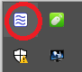
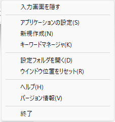
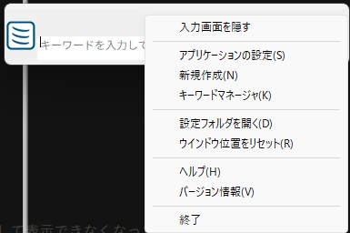

タスクトレイ
本アプリを起動すると、タスクトレイにアイコンが表示される

アイコンを右クリックするか、入力画面のコメント表示欄を右クリックすると、メニューが表示される
タスクトレイアイコンを右クリック
入力画面のコメント表示欄を右クリック
入力画面を表示/入力画面を隠す
入力画面を表示する/非表示にするアプリケーションの設定
アプリケーション設定画面を表示する新規作成
コマンド登録画面を表示するキーワードマネージャ
キーワードマネージャを表示する設定フォルダを開く
本アプリのユーザー設定が保存されたフォルダをひらくウインドウ位置をリセット
入力画面の位置・サイズを初期状態に戻す
マルチモニタ環境にて別モニターで表示したまま、モニターの構成が変化して表示できなくなったときの復旧用ヘルプ
このファイルを開くバージョン情報
バージョン情報を表示する終了
このアプリケーションを終了する